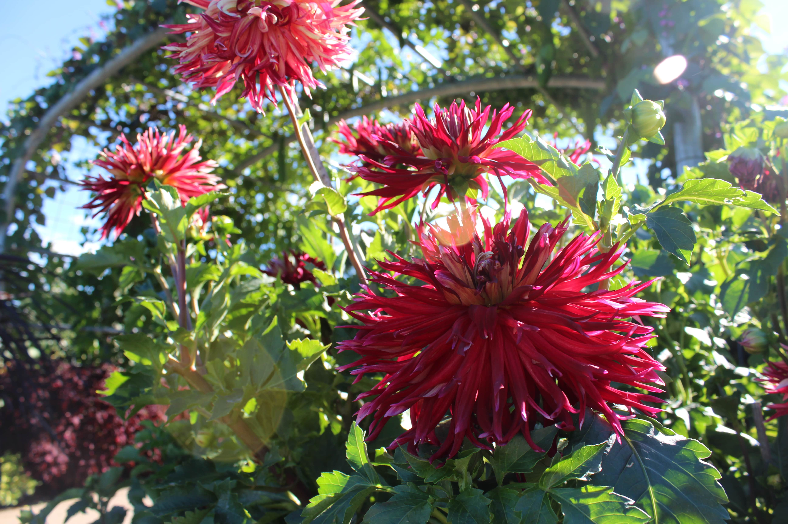

Arboretum

Metadata
| Date | Location | F-stop | Exposure time | ISO |
|---|---|---|---|---|
| 9/11/2016 | University Park, PA | f/6.3 | 1/100s | ISO-100 |
| Date | 9/11/2016 |
|---|---|
| Location | University Park, PA |
| F-stop | f/6.3 |
| Exposure time | 1/100s |
| ISO | ISO-100 |
Background
This photo was taken at the Arboretum at Penn State. I love this photo for its bright colors and the sun flare effect.